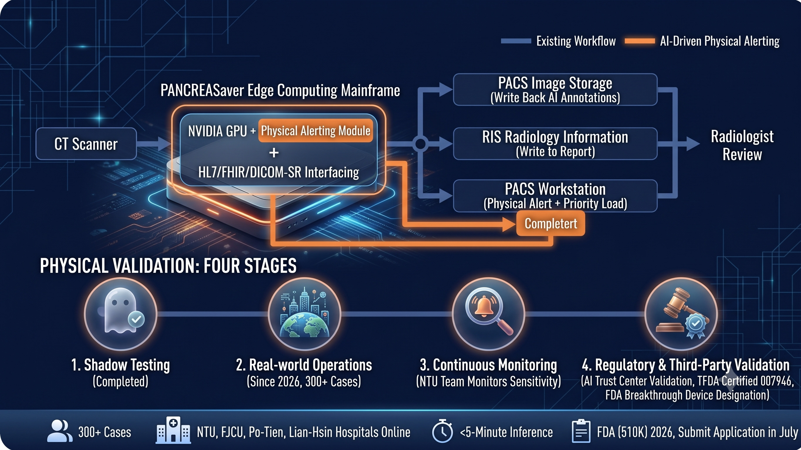
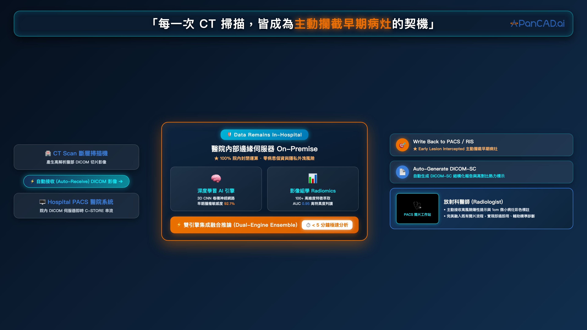

在每一位放射科醫師肩上的重擔中，加入一位永遠不累、永遠警覺的 AI 夥伴。
為＜2cm 早期病灶加上 AI 第二雙眼睛，直接回應胰臟癌漏診痛點。
高風險影像自動優先載入，結構化報告減少醫師文書負擔。
把「早期發現」變成貴院的品質亮點，病人與家屬都感受得到。
健檢中心可將胰臟癌 AI 偵測列為旗艦項目，吸引高階受檢者。
環境盤點、資訊安全評估與專案規劃。
與 PACS 系統對接、影像串流與警示設定。
回顧性影像驗證、與院內標準比對。
正式啟用與醫事人員教育訓練。


衛部醫器製字第 007946 號，台灣上市合規。
美國 FDA 突破性醫材資格，510(k) 已遞交。
符合醫療影像傳輸與個資保護規範，院內部署彈性。
我們的臨床團隊將親自到院示範。